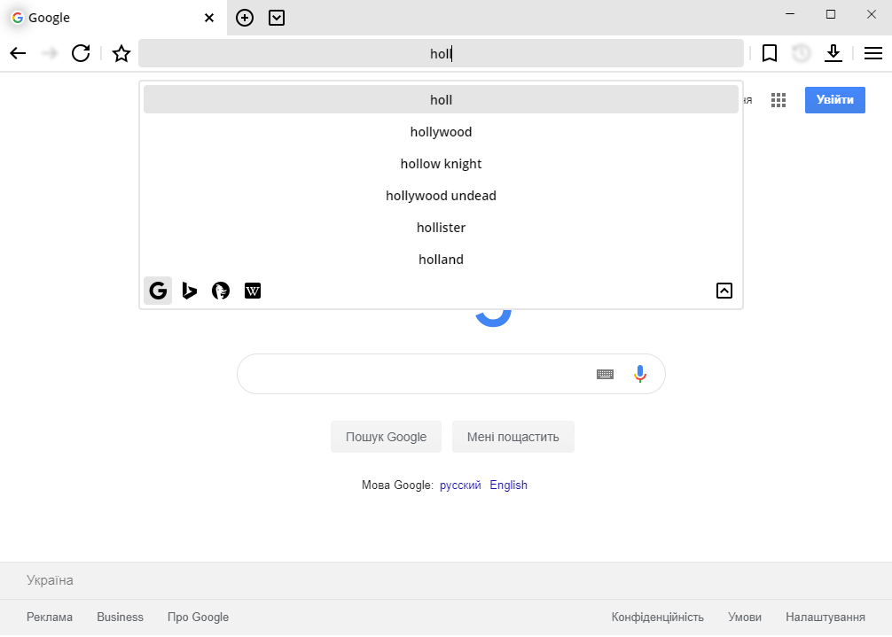
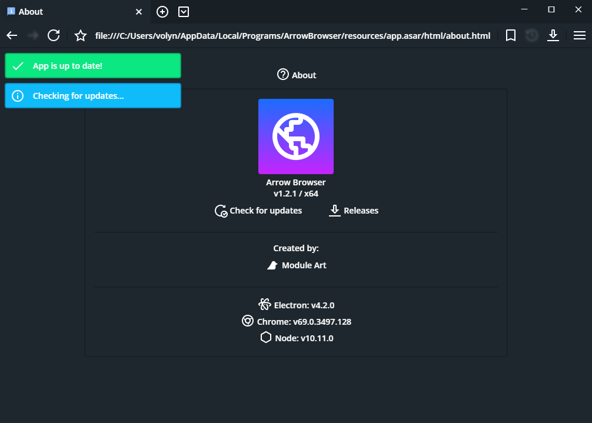
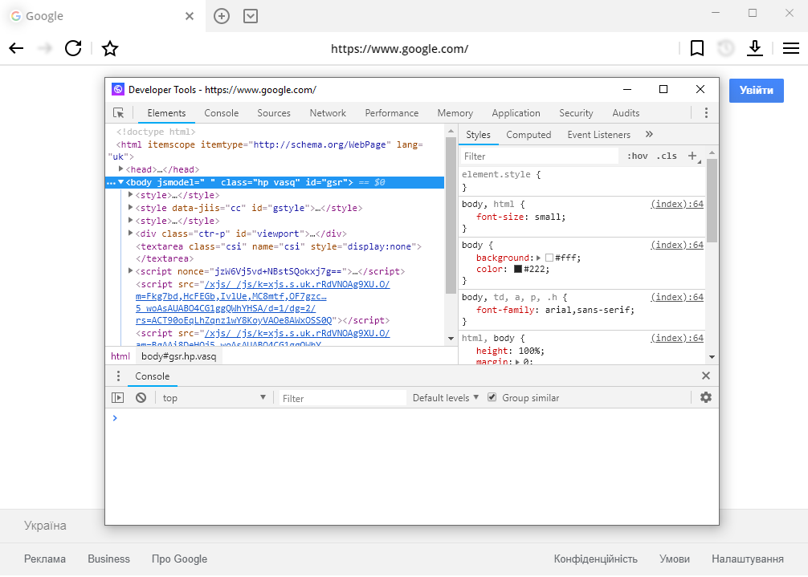
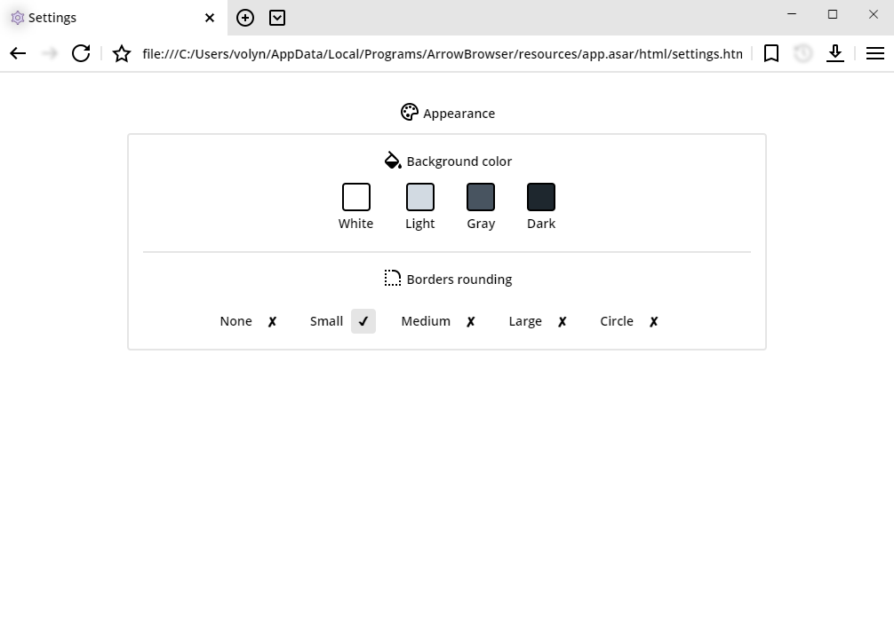

ArrowBrowser
v1.2.1
Screenshots
Updates
Cross-platform
chromium web browser.
Features:
• Loads pages up to 2x faster than your current browser.
•
A large number of themes, gradients and options.
• Real dark mode. Ideal for oled / amoled displays.
• Perfect for developers. Sites look exactly like you want. The usual chromium developer tools.
Download:
Windows
Other:
Planner (Trello)
Releases (GitHub)
Screenshots
Regular
Dark mode
Search suggestions

Multitabs
Bookmarks
Automatic updates

Find in page
Devtools

Downloads
Appearance

Updates
May 21 / 2019
Beta v1.2.1 "Design Update"
• ArrowFlat UI Design 2.1 (Removed shadows and borders).
• Decreased installer file size.
May 21 / 2019
Beta v1.2.0 "Impression Update"
• New flat colors: blue, green, orange, red, light, gray, dark.
• Smaller font: 14px.
• Variable roundness of the corners of the interface elements.
• Some new shortcuts.
• The size and position of the window are maintained.
• New download manager.
• The application will not close during file download.
• Find in page.
• Removed loading screen.
• Windows 10 controls.
• Dynamic width of tabs.
• Tabs list button.
• Removed browser icon on the title bar
• Context menu icons.
• Removed error page.
• Lighter substrates.
• Welcome screen.
• Multiple search engines on search panel (Google, Bing, DuckDuckGo, Wikipedia).
April 13 / 2019
Beta v1.1.0 "Context Update"
• New outlined icons style.
• Tab context menu.
• Light and dark themes.
• New bookmark manager (Drag&Drop).
• Loading screen.
• Zoom factor.
• Added context menu icons.
• New design (Shadows replaced by borders).
• Input roles.
• Bookmarks, settings, about in new tab.
• Sidebar replaced by context menu (Better performance).
• Keyboard shortcuts.
• Notification fade animation.
• New app icon.
• Fullscreen mode (F11).
• Removed download manager. It will appear later in the new form.
• Error page.
• New font (Open Sans).
• 50 new background colors.
March 5 / 2019
Beta v1.0.0
Arrow Browser is available!